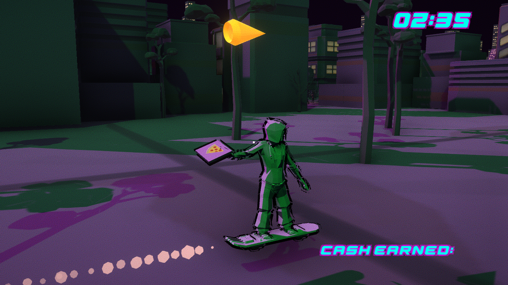
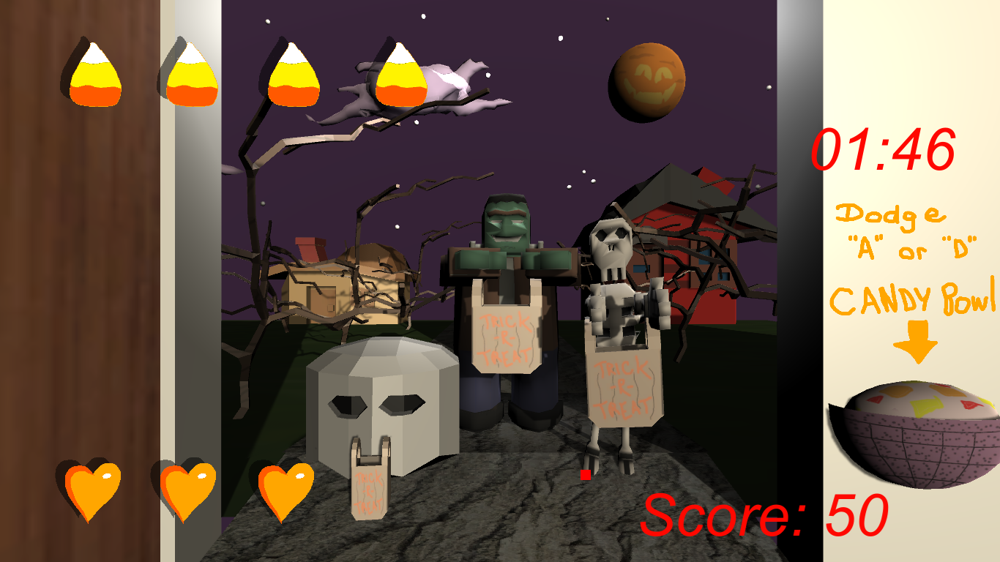
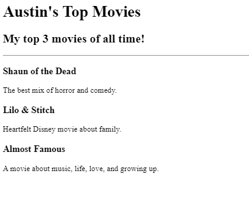

Austin Clark's Portfolio
Web and Game Developer, Writer, Creator

Deliver pizzas throughout a cyberpunk world and make enough cash to get off-planet.

Survive the night by handing out candy before the kids go crazy!

A small website ranking my favorite movies.
About Me | Contact Me